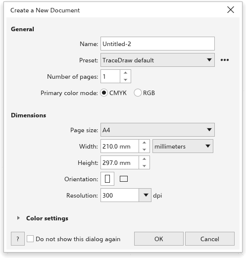

Créer un dessin
Chaque dessin commence par un format de page, un nombre de pages, un mode de couleur et une résolution. Vous les choisissez dans la boîte de dialogue Créer un nouveau document.
Pour créer un dessin
- Choisissez Fichier > Nouveau (Ctrl+N), cliquez sur Nouveau dans la barre d'outils standard, cliquez sur le + après le dernier onglet de document, ou cliquez sur Nouveau document dans l'écran d'accueil.
- Dans la boîte de dialogue Créer un nouveau document, réglez les valeurs décrites ci-dessous.
- Cliquez sur OK ou appuyez sur Entrée.
Le dessin s'ouvre dans son propre onglet. La boîte de dialogue retient vos valeurs pour le dessin suivant.

Général
- Nom nomme le dessin. Il commence par le prochain
Untitled-N. - Préréglage règle en une fois le mode de couleur, le format de page, les unités et la résolution. Les préréglages sont Valeurs par défaut de TraceDraw et CMJN par défaut (CMJN, A4, millimètres, 300 ppp), RVB par défaut (RVB, A4, millimètres, 300 ppp) et Web (RVB, 1920 x 1080 pixels, 72 ppp). Quand vous changez l'une de ces valeurs, le préréglage affiche Personnalisé, sauf si les valeurs correspondent de nouveau à un préréglage.
- Le bouton à côté du préréglage contient Enregistrer le préréglage, qui demande un Nom du préréglage et ajoute les valeurs actuelles à la liste, et Supprimer le préréglage, qui supprime un préréglage que vous avez enregistré. Les préréglages intégrés ne peuvent pas être supprimés.
- Nombre de pages règle le nombre de pages du dessin, de 1 à 999. Chaque page s'appelle "Page N" et a un calque.
- Mode de couleur principal est CMJN, pour l'impression, ou RVB, pour les écrans.
Dimensions
- Format de page liste les formats de papier, ou Personnalisé. Choisir un format garde l'orientation actuelle. Une largeur et une hauteur tapées qui correspondent à un format, dans l'une ou l'autre orientation, sélectionnent son nom.
- Largeur et Hauteur règlent la taille de la page, dans les unités choisies dans la liste à côté de la largeur. Ces unités deviennent les unités du dessin dans la barre de propriétés.
- Orientation : Portrait ou Paysage.
- Résolution en ppp (300 au départ). Elle sert aux effets convertis en pixels et à mesurer les tailles en pixels : 1920 pixels font 162,56 mm à 300 ppp et 677,33 mm à 72 ppp. Quand les unités sont des pixels, changer la résolution garde la taille de la page en pixels.
Paramètres de couleur
Ouvrez Paramètres de couleur pour choisir le Profil RVB, le Profil CMJN et le Profil de niveaux de gris du dessin, ainsi que l'Mode de rendu. Ils démarrent sur sRVB, le profil CMJN intégré, des niveaux de gris avec 20 % d'engraissement et colorimétrie relative. Voir Gestion des couleurs.
Ignorer la boîte de dialogue
Cochez Ne plus afficher cette boîte de dialogue pour créer de nouveaux dessins tout de suite, avec les dernières valeurs utilisées. Pour revoir la boîte de dialogue, activez le réglage correspondant sur la page Général de Outils > Options > TraceDraw. Voir Options de TraceDraw.
Autres façons de commencer
- Fichier > Nouveau à partir d'un modèle part d'un modèle. Voir Modèles.
- Fichier > Ouvrir ouvre un dessin existant. Voir Ouvrir et enregistrer des dessins.